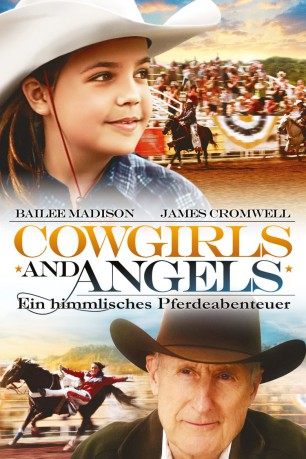
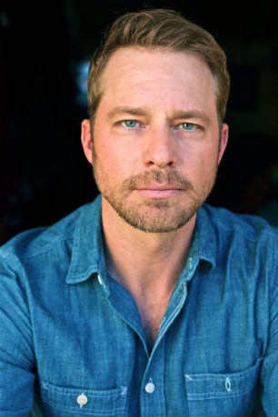
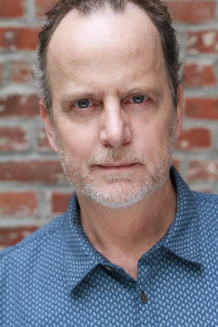

#9568 Cowgirls and Angels - Ein himmlisches Pferdeabenteuer
Alternativ: Cowgirls 'n Angels
 
 IMDB-Wertung: 6.2 / 10
IMDB-Wertung: 6.2 / 10  Metascore: 0
Metascore: 0 
Ida Clayton hat ihren Vater nie kennen gelernt. Eines Tages macht sich das rebellische Mädchen auf die Suche nach dem Rodeo-Reiter. Dabei begegnet sie den "Sweethearts of the Rodeo", einer Gruppe von Trickreiterinnen, und deren Trainer, der der ehemalige Rodeo-Star Terence Parker ist. Ida findet schnell Gefallen am riskanten Trickreiten und mit ihrer Hartnäckigkeit überzeugt sie schließlich Parker, sie trotz ihres jungen Alters ins Team aufzunehmen. So hat Ida außer ihrer Leidenschaft für's Reiten eine Familie gefunden, nach der sie sich immer gesehnt hat...
Jahr: 2012
Dauer: 91 Minuten
FSK: 0
Land: USA Studio: 20th Century Fox Home EntertainmentTonspuren: DD5.1 - ,
Untertitel:
Auflösung: 1080p (1920x1040) Größe: 6307 MB
Genre: Drama, Abenteuer, Familie
Regisseur: Timothy Armstrong
Drehbuch: Timothy Armstrong, Stephan Blinn
Soundtrack: Alan Williams
Darsteller:
- Bailee Madison als Ida
- Dusta Kimzey als Dusta
-  Drew Waters als Rawley
 Frankie Faison als Augustus
Frankie Faison als Augustus James Cromwell als Terence
James Cromwell als Terence- Kathleen Rose Perkins als Rebecca
- Dora Madison als Kansas
- Leslie-Anne Huff als Madison
- Haley Ganzel als Rose
- Aimee Crowther als Kim
- Denise Lee als Alice
- Louanne Stephens als Joan
 Alicia Witt als Elaine
Alicia Witt als Elaine- Calley Luman als Sierra
- Bill Poague als Mr. Stucky
- Jackson Rathbone als Justin
- Lindsay Sawyer als Jennie
- Ashley D. Merritt als Brooke
- Richie McDonald als Doug Grant
- Kent Jones als Doctor
- Justin Lauer als Jim Clayton
- Robert Paschall Jr. als Cowboy
- Shawn Griffith als Rodeo Announcer
- Jon Bielich als Father at the fair (uncredited)
- Chris Bruza als Bar Patron (uncredited)
- Brendan Calton als Rodeo Fanatic (uncredited)
- Lorrie Chilcoat als Rodeo Fan 1 (uncredited)
- Laurie Cummings als Rodeo Fan (uncredited)
- Mark Adam Goff als Cowboy (uncredited)
 Chuck Norris als Himself (archive footage) (uncredited)
Chuck Norris als Himself (archive footage) (uncredited)- Ben Richardson als Cowboy (uncredited)
-  Andrew Sensenig als Mr. Mack (uncredited)
- Richard Levi als Security Guard
- Noell Coet als Nora
- Cristela Carrizales als Marta
- Daniel Armstrong als Autograph Boy
- Lilly Armstrong als Autograph Girl #1
- Macy Armstrong als Autograph Girl #2
- Natalia Lopez als Autograph Girl #3
- Julia Lopez als Autograph Girl #4
- Grayson Griffith als Fan #1
- Madison Freeman als Ricky Rodeo
- Amber Hayes als Amber Grant
- Mark Nutter als Walker
- Brian Capshaw als Mr. Winters
- Karena Richmond als Young Elaine
- Keaton Cunningham als Violin Girl
- Joyce Galloway als Terence's Wife
- Bill Story als Rodeo Announcer
- Monty Stueve als Rodeo Announcer
Datei: X:\2012(A-F)\Cowgirls and Angels - Ein himmlisches Pferdeabenteuer (2012, FSK0, 1920x1040).mkv seit 11.09.2018
Festplatte: HD 2012(A-M)
 Es gibt insgesamt 102 Filme in der Gruppe '2012(A-F)'
Es gibt insgesamt 102 Filme in der Gruppe '2012(A-F)'